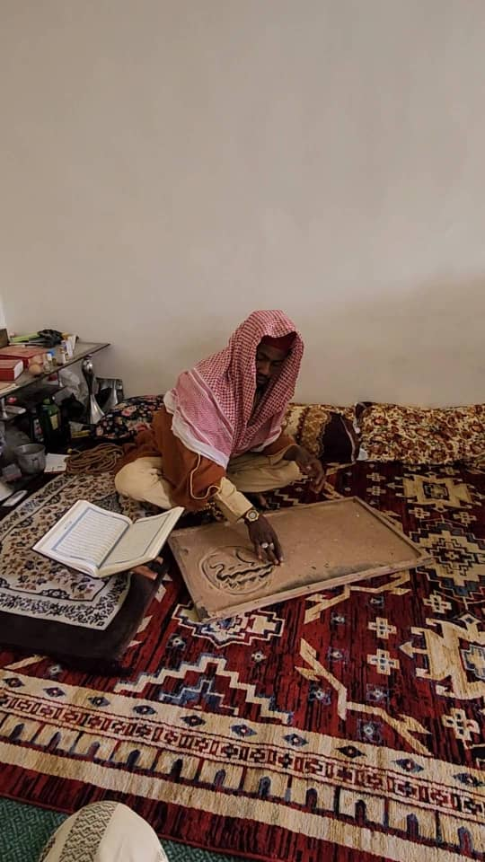
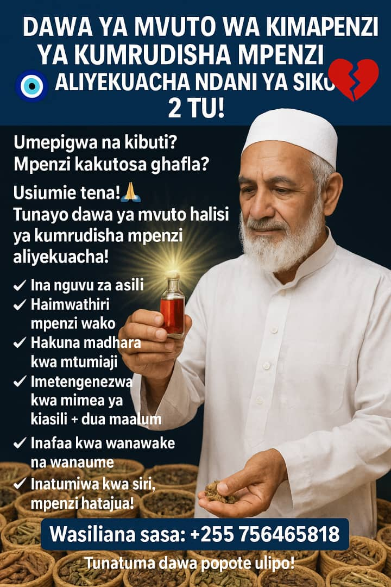
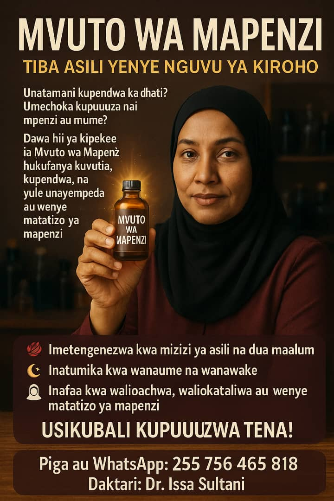
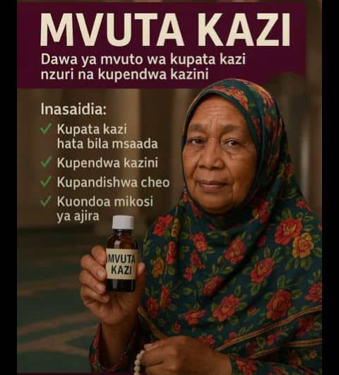
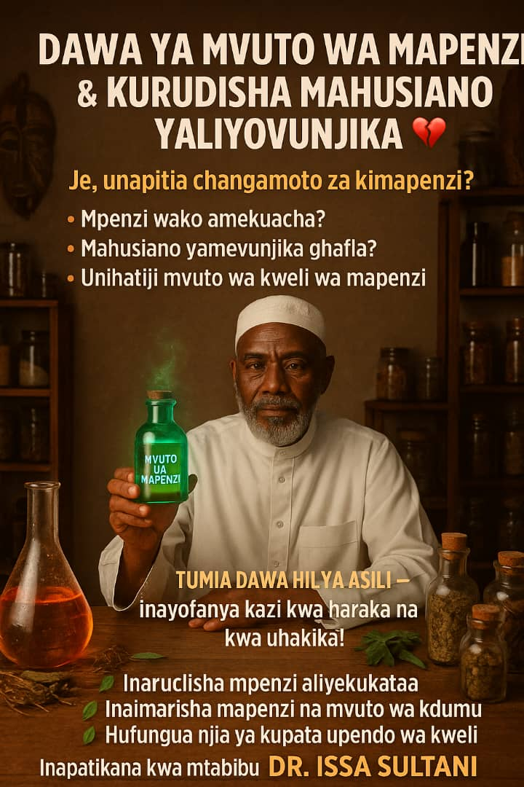

Tiba Asilia · Kutoka kwa Allah
Issa Sultani
Mtabibu mwenye kubri — nyota za binadamu na dawa za asili ya Africa.

Kuhusu
Kutana na mtabibu mwenye kubri
Issa Sultani ni mtabibu wa nyota za binadamu na dawa za asili ya Africa. Ana uwezo wa kubaini tatizo lako pindi tu utakapofanya mawasiliano kupitia wasaa husika.
Anatibu kwa kutumia Vitabu vya Qur-an, dawa za asili za Africa, dawa za Kiarabu na majini.
Bidhaa maalum
Pete ya Siri za Waarabu
Pete ya mafanikio na maajabu — yenye nguvu za kipekee, siri za kiroho na majini, pamoja na dua zenye nguvu.
Inatumiwa na masultani na wafalme, viongozi wa dini na serikali, matajiri na watu maarufu duniani. Hii si pete ya kawaida — ni msaidizi wako katika maisha.
- Mali na riziki Kuvutia mali na riziki kwa wingi.
- Biashara na mafanikio Kufungua milango ya biashara na mafanikio.
- Upendo na kukubalika Kukupa upendo na kukubalika miongoni mwa watu.
- Matokeo ya kushangaza Unaweza kutamani jambo lolote kupitia pete hii.
Idadi ni ndogo sana — wahi kuagiza yako kabla hazijaisha.
Huduma kuu
Unasumbuliwa na mapenzi?
Umeachwa na umpendae — mume, mke au mpenzi — na bado unampenda? Umejaribu sehemu nyingi bila mafanikio? Wasiliana ujione muujiza wa papo kwa papo.
- Kurudisha mahusiano Kuimarisha ndoa yako ndani ya saa 12 tu.
- Kusambaratisha mahusiano Umekimbiwa na anaishi na mtu mwingine? Muone akutatulie.
- Kutimiza ahadi Atamfanya atimize ahadi zote kwa muda mfupi.
- Jina au picha Anatumia jina la muhusika au picha kumaliza tatizo lako.
Dawa maalum
Dawa za mvuto na mafanikio
Dawa za asili zenye dua maalum — mapenzi, kazi, na kurudisha mahusiano. Tunatuma dawa popote ulipo.

Mvuto wa Kimapenzi
Kurudisha mpenzi aliyekuacha ndani ya siku 2 — mimea ya asili + dua maalum.
Agiza WhatsApp
Mvuto wa Mapenzi
Kwa walioachwa, waliokataliwa, au wenye matatizo ya mapenzi — wanaume na wanawake.
Agiza WhatsApp
Mvuta Kazi
Kupata kazi, kupendwa kazini, kupandishwa cheo, na kuondoa mikosi ya ajira.
Agiza WhatsApp
Kurudisha Mahusiano
Inarudisha mpenzi, inaimarisha mapenzi, na hufungua njia ya upendo wa kweli.
Agiza WhatsAppUshahidi
Shuhuda kutoka kwa wateja
Matokeo halisi — ujumbe na video kutoka kwa waliosaidiwa.
Video ya ushahidi 1
Video ya ushahidi 2
Kinga
Kinga, zindiko na nguvu
Pete na dawa za asili zinazotumika katika tiba ya kiroho na kulinda maisha yako.


Huduma
Huduma za tiba
Anatafsiri ndoto, husafisha nyota, na hushughulikia matatizo mengi ya maisha.
Tafsiri ya ndoto
Maelezo ya ndoto na maana zake
Bahati nasibu
Kushinda bahati na kufungua milango
Kusafisha nyota
Usafishaji wa nyota za binadamu
Mvuto na biashara
Kuongeza mvuto na mafanikio
Kinga ya mwili
Ulinzi wa kiroho wa mwili
Zindiko za nyumba
Kulinda na kutakasa makazi
Miguu kufa ganzi
Tiba ya matatizo ya miguu
Kufungua kizazi
Kwa waliofungwa kwa kishirikina
Jini la mali
Utajiri — bila masharti
Nguvu za kiume
Kuimarisha uwezo wa kiume
Kesi shindani
Humaliza kesi ndani ya siku 14
Kwa nini Issa Sultani
Matokeo ya haraka, msaada wa karibu
- Kubaini tatizo lako papo hapo baada ya mawasiliano
- Mahusiano na ndoa — ndani ya saa 12
- Kesi zilizoshindikana — ndani ya siku 14
- Tiba kwa dini zote na imani zote
Mawasiliano
Wasiliana sasa
Piga simu au tuma WhatsApp — utasaidiwa haraka kupitia wasaa husika.
NB: Tiba kwa dini zote na imani zote.